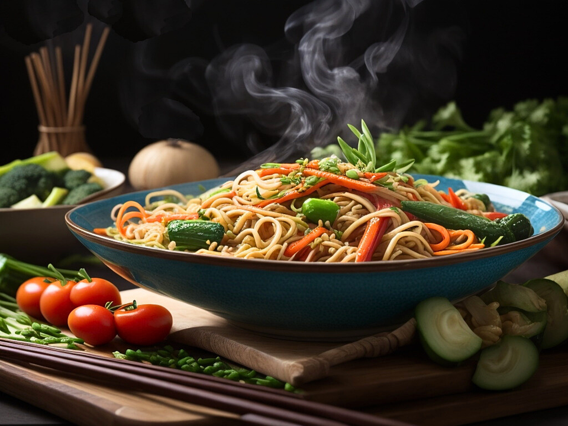

🍜 Noodles Recipe

⭐ 4.7 Rating
⏱️ 20 Minutes
👨🍳 Easy
🍽️ 2 Servings
Ingredients
- 200g Noodles
- 1 Carrot (Julienned)
- 1 Capsicum (Sliced)
- 1 Onion (Sliced)
- 2 Garlic Cloves (Chopped)
- 2 tbsp Soy Sauce
- 1 tbsp Chili Sauce
- 1 tbsp Tomato Ketchup
- Salt & Black Pepper
- 2 tbsp Cooking Oil
Cooking Steps
- Boil the noodles until just cooked, then drain.
- Heat oil in a pan and sauté the garlic.
- Add onion, carrot, and capsicum.
- Cook the vegetables for 3–4 minutes.
- Add soy sauce, chili sauce, and ketchup.
- Mix in the boiled noodles.
- Add salt and black pepper to taste.
- Toss everything well for 2–3 minutes.
- Serve hot with your favorite sauce.